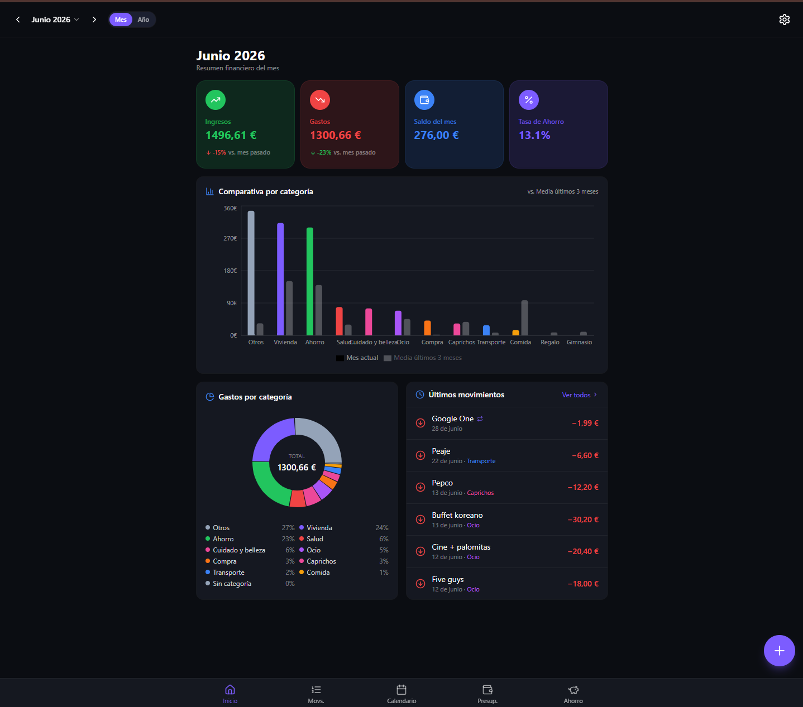

Proyecto · 04
Finanzor: app de finanzas personales mobile-first con presupuestos, metas de ahorro e importación bancaria.

El problema
Las apps de finanzas del mercado suelen caer en uno de dos extremos: o son demasiado simples (un Excel glorificado) o tan complejas que acabas necesitando un manual para registrar un café. Quería algo que se sintiera ligero de usar en el móvil, pero con la potencia suficiente para entender de verdad a dónde va el dinero cada mes.
El punto de partida fue mi propio flujo: registro movimiento → le pongo categoría → quiero saber si me estoy pasando del presupuesto → y si puedo seguir aportando a mi meta de ahorro. Todo eso sin fricciones, sin menús anidados, mobile-first desde el diseño inicial.
Qué construí
Registro de ingresos y gastos por categorías
Flujo rápido para añadir movimientos: importe, categoría, nota opcional y fecha. Las categorías son personalizables. El diseño prioriza que el registro sea un gesto de tres segundos desde el móvil, no un formulario.
Calendario de movimientos
Vista mensual y semanal que muestra los movimientos sobre el calendario. Útil para detectar patrones (¿cuándo gasto más?) y recordar qué pasó un día concreto sin tener que buscar en una lista.
Presupuestos mensuales por categoría
Para cada categoría puedes definir un presupuesto mensual. La app muestra cuánto llevas consumido, cuánto queda y cuándo estás por encima. Sencillo pero efectivo para frenar gastos en tiempo real.
Metas de ahorro con seguimiento de aportaciones
Creas una meta (destino de viaje, fondo de emergencia, lo que sea), fijas un importe objetivo y vas registrando aportaciones. La app calcula el progreso y te muestra cuánto te falta. Admite múltiples metas en paralelo.
Importación desde CSV bancario y exportación
Puedes importar un extracto bancario en CSV y mapear las columnas al esquema de Finanzor. También puedes exportar tus datos filtrados por rango de fechas, útil para declaraciones o simplemente para tener una copia local.
Reto principal: multiusuario sin backend propio
Toda la capa de datos y autenticación vive en Supabase. Eso
significó diseñar el esquema de PostgreSQL y las políticas RLS
desde el principio pensando en aislamiento de datos por usuario —
cada fila tiene su user_id y los permisos se validan
en la base de datos, no en el cliente. El reto fue entender bien
RLS para que el multiusuario funcionara sin que yo tuviera que
escribir ni una línea de servidor propio.
Decisiones técnicas
React 18 + Vite + Tailwind
Stack ligero y rápido de iterar. Vite para builds instantáneos en desarrollo, Tailwind para no salir del JSX a escribir CSS. En una app mobile-first donde el diseño cambia mucho al principio, poder ajustar padding y colores directamente en el componente acelera mucho el ritmo.
Supabase como backend completo
PostgreSQL para los datos, Supabase Auth para la autenticación, PostgREST para la API automática. Elegí Supabase porque me permitía tener un backend real (con relaciones, constraints y RLS) sin mantener un servidor. Para un proyecto personal en solitario, ese trade-off tiene mucho sentido.
React Query (TanStack) para estado servidor
Gestión de caché, refetch en foco, estados de carga y error — todo sin tener que escribirlo a mano. En una app con muchas lecturas (calendario, presupuestos, metas) React Query evita que la UI se quede desincronizada con los datos reales.
Aprendizajes
- RLS en Supabase obliga a pensar en seguridad desde el esquema. No puedes parchear los permisos después: si el modelo de datos no distingue bien los usuarios desde el principio, hay que refactorizar todo.
- Mobile-first de verdad significa diseñar para el pulgar primero. Los botones de acción principal abajo, los gestos naturales, el tamaño de los inputs. Empezar con desktop y "adaptar" no funciona igual.
- La importación de CSV bancario es un campo minado. Cada banco exporta diferente. Tuve que construir un sistema de mapeo de columnas flexible en vez de asumir un formato fijo.